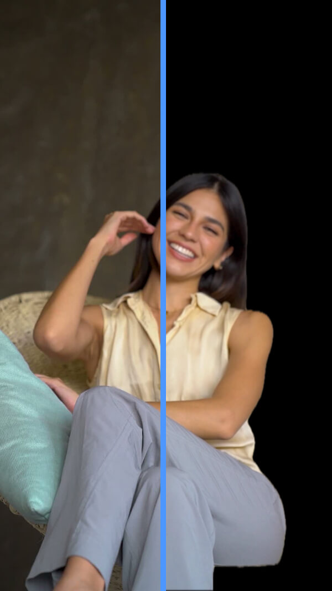
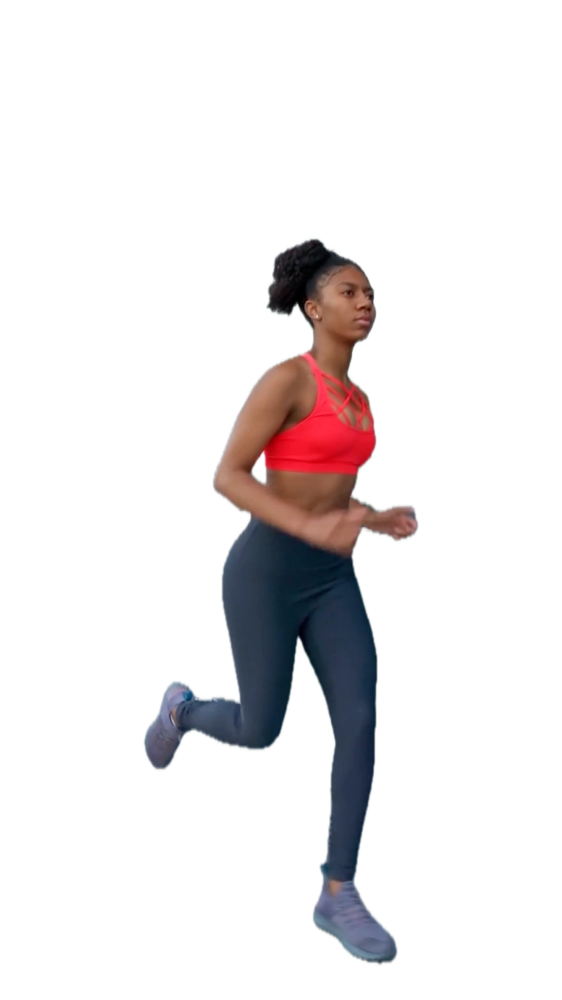

Estudio de animación local para Mac — 100 % local
Previsualiza, convierte y crea animaciones GIF, APNG y WebP de alta calidad. Quita el fondo de tus vídeos con IA local — sin subir nada a la nube.
Solo ~3MB • Funciona por completo en tu Mac • Sin conexión a internet



Privacidad profesional — Tus archivos no salen de tu Mac
Sin servidores, sin exposición en la nube. Previsualiza, convierte y genera animaciones en alta resolución totalmente sin conexión. Tus archivos de origen, entregas a clientes y proyectos confidenciales permanecen seguros en tu Mac.
Procesado 100 % local
La segmentación por IA se ejecuta en el dispositivo con Apple Vision en tu Mac — con aceleración del Neural Engine cuando está disponible. Tus archivos creativos no salen de tu entorno local, en línea con las expectativas más exigentes de privacidad.
Sin registro de datos
No rastreamos tu uso, no recopilamos tus archivos y no hay un servidor para tus medios. TransMov es una herramienta nativa — no un servicio en la nube.
Por qué elegir TransMov como estudio de imagen animada para Mac
Procesado 100 % local — sin necesidad de subir archivos
Sin servidores, sin exposición en la nube. Previsualiza, convierte y crea imágenes animadas de alta calidad totalmente sin conexión. Los archivos sensibles de tus clientes permanecen seguros en tu Mac.
Optimizado para Apple Silicon — procesado rápido y en tiempo real
Impulsado por el framework nativo Apple Vision y la aceleración del Neural Engine de Apple Silicon, para resultados instantáneos y listos para producción.
Transparencia alfa real y control de exportación
Genera canales alfa de 8 bits para APNG y WebP e intégralos sin fisuras en interfaces web o de apps, y optimiza las paletas de color de GIF para reducir el tamaño de archivo.
Un estudio nativo de imagen animada, todo en uno
TransMov reúne cuatro herramientas esenciales de animación en un único flujo nativo, y cubre creación, conversión y previsualización por completo en local, en macOS.
Vídeo a animación
Convierte vídeos MP4 y MOV directamente a GIF, APNG o WebP. Ajusta la duración, recorta el encuadre y elige el tamaño de salida, sin eliminar el fondo.
Eliminación de fondo con IA
Elimina el fondo de tus vídeos sin conexión con IA local o croma. Revisa el resultado fotograma a fotograma, cambia el color de fondo o usa imágenes propias y exporta con transparencia alfa real.
Conversor de formatos
Convierte archivos existentes entre GIF, APNG y WebP. Consulta los detalles de reproducción en tiempo real mientras ajustas el tamaño de exportación, las paletas de color de GIF o la calidad de WebP para optimizar tus archivos.
Visor de fotogramas
Abre cualquier archivo animado para revisar tamaños, modos de color, el número exacto de fotogramas y los bordes transparentes sobre un tablero de ajedrez — pensado para visualizar, no para editar.
Del vídeo a la animación transparente en 3 pasos
Sin subidas. Sin configuración. Arrastra, procesa y exporta.
Suelta tu archivo
Arrastra y suelta. Sin subidas.
Magia de la IA
Aislamiento instantáneo con IA. Impulsado por el Neural Engine.
Guarda y usa
Exportación Pro. Lista para cualquier plataforma.

Pensado para cómo entregas
Desde flujos experimentales con IA hasta recursos de producción estándar.

El nuevo estándar de la animación con IA
Herramientas de IA como Runway y Luma generan imágenes impresionantes, pero con fondos sucios. TransMov cierra el hueco: convierte el vídeo bruto de IA en recursos transparentes ultraligeros, listos para publicar al instante.

Interfaz de apps e interacción
Superpón movimiento transparente sobre una interfaz real — ideal para la incorporación, los estados al pasar el cursor y las animaciones de respuesta, con un canal alfa completo.

Redes sociales y superposiciones
Crea en segundos pegatinas y superposiciones transparentes para vídeo en redes, sin abrir After Effects.
Estándares técnicos
Pensado para entornos de producción exigentes, sin ceder en calidad.
| Capacidades | TransMov (IA nativa) | Servicios en la nube tradicionales |
|---|---|---|
| Resolución máxima | Calidad original (sin límite) | Suele estar limitada (p. ej., 720p) |
| Privacidad de los datos | 100 % sin conexión (en el dispositivo) | Almacenado en servidores de terceros |
| Transparencia | Canal alfa Pro de 8 bits (APNG/WebP) | GIF de 1 bit o restringido |
| Titularidad de los datos | Tú eres el dueño | Las condiciones pueden variar |
| Modelo de precios | Compra de por vida disponible | Mensual / por créditos |
💡 ¿Comparas flujos locales y en la nube? Consulta la guía de decisión →
Precios simples y nativos
Las herramientas profesionales no deberían esconder costes de nube.
Deja de pagar créditos mensuales en la nube.
Suscripción mensual
Acceso completo. Cancela cuando quieras.
Suscripción anual
Un coste mensual efectivo más bajo si lo usas con regularidad.
Acceso de por vida
La herramienta es tuya. Tu privacidad, también. Para siempre.
Un solo pago, acceso local de por vida.
* El precio final es el que muestra el App Store y puede variar según la región.
Comparación de funciones
| Capacidad | Gratis | Pro (suscripción/de por vida) |
|---|---|---|
| Duración de vídeo ilimitada | × | ✓ |
| Formatos de exportación | GIF | APNG / GIF / WebP / Secuencia PNG |
| Exportación sin marca de agua | × | ✓ |
| Resolución personalizada | × | ✓ 100 - 4096px |
| Herramientas de borde avanzadas | × | ✓ Desvanecido / Escala / Enfoque / Reducción de ruido / Suavizado |
| Recorte espacial (reencuadre) | × | ✓ |
| Borrador del editor de fotogramas | × | ✓ Borrar el fondo sobrante fotograma a fotograma |
| Modos de máscara | IA / Croma | IA / Croma |
| Sustitución de fondo | 20 colores sólidos | 20 colores sólidos / Degradados predefinidos / Imágenes propias |
💡 ¿No sabes qué formato elegir? Lee nuestro análisis: APNG frente a GIF: ¿cuál encaja mejor en tu proyecto? →

La ventaja nativa
TransMov nació de una necesidad sencilla: una herramienta profesional de pago único para usuarios de Mac que respeta la privacidad. No creemos en las suscripciones en la nube para tareas que tu Mac puede resolver en local.
Recursos y guías
Empieza con TransMov
Comprende cómo encaja TransMov en flujos de producción reales, de la generación con IA al recurso final.
De la IA al recurso
El vídeo generado por IA es demasiado pesado para producción. Este flujo muestra cómo TransMov lo convierte en recursos ligeros y utilizables.
Flujos de diseño web
Cómo integrar animaciones transparentes en interfaces modernas y sistemas de diseño de producto.
Herramientas online
Previsualiza imágenes animadas en el navegador — los archivos no salen de tu dispositivo.
Visor de GIF
Suelta un GIF para previsualizar la animación, el tamaño y las dimensiones en el navegador.
Visor de APNG
Previsualiza PNG animado (APNG) con transparencia alfa — sin necesidad de subirlo.
Visor de WebP
Abre archivos WebP animados o estáticos al instante en el navegador.
Guías de formato y plataforma
Compara formatos de animación y aprende a publicar recursos transparentes en distintas plataformas.
GIF vs APNG vs WebP
Compara formatos por transparencia, tamaño de archivo y compatibilidad, y elige la salida adecuada.
Convertir vídeo a APNG transparente en Mac
Convierte MP4 o MOV en APNG transparente de alta fidelidad en local — 100 % sin conexión, ideal para la compatibilidad con Safari en iOS.
Guía de animación transparente para Framer y Webflow
Corrige el recuadro negro de Safari en iOS y publica recursos APNG y WebP transparentes y ligeros para entornos web modernos.
Guías de decisión
Compara herramientas y enfoques para elegir el flujo adecuado a tu proyecto.
Las mejores herramientas Mac para eliminar el fondo de un vídeo
Parte del mapa del ecosistema para encontrar rápido qué categoría de herramienta encaja con tu flujo.
Eliminación de fondo: local frente a la nube
Entiende cuándo el procesado local supera a las herramientas de IA en la nube, y cuándo no.
Cuándo NO usar TransMov
Límites claros de para qué no está pensado TransMov, y qué herramientas usar en su lugar.
¿After Effects es excesivo?
Salta la pantalla de carga de Adobe. Elimina el fondo de tus vídeos en local en Mac, sin suscripciones ni subidas a la nube.
Por qué importa la IA local
Por qué el procesado en el dispositivo se está convirtiendo en el estándar de las herramientas creativas modernas.
Preguntas frecuentes
¿Cómo puede una app de ~3 MB ofrecer animaciones de alta calidad?
Que la descarga sea pequeña no implica ceder en calidad. TransMov está creado de forma nativa para macOS, así que no necesita incluir un entorno de ejecución multiplataforma pesado. La app se mantiene ligera y, aun así, puedes previsualizar las animaciones con fluidez y exportar a APNG, GIF y WebP — todo en tu Mac.
¿Cómo convierto un vídeo a APNG en macOS?
Importa tu vídeo en TransMov, elige APNG como formato de salida y exporta la animación. Todo se procesa en local, en macOS.
¿El GIF admite transparencia?
El GIF solo admite transparencia de 1 bit (totalmente visible u opaco), lo que puede producir bordes dentados. APNG y WebP admiten transparencia alfa completa, con resultados más suaves y naturales.
¿Cuál es la diferencia entre APNG y GIF?
APNG admite color completo y transparencia alfa, mientras que el GIF se limita a 256 colores y una transparencia básica. APNG suele ofrecer animaciones de más calidad, sobre todo en interfaces y contenidos con degradados.
¿Puedo eliminar el fondo de un vídeo en local en Mac?
Sí. TransMov usa el framework Apple Vision y el procesado en el dispositivo para eliminar el fondo sin subir archivos, con privacidad y un rendimiento rápido.
¿Qué formato es el mejor para animaciones web?
Depende de lo que necesites. El GIF está muy extendido, APNG ofrece mejor calidad con transparencia y WebP suele comprimir mejor. Para interfaces y recursos de diseño, APNG o WebP suelen ser la mejor opción.
Todas las herramientas que necesitas para imágenes animadas
Descarga TransMov para previsualizar, convertir y crear animaciones de alta calidad, con fluidez y por completo en local en tu Mac.
Version 2.3 · macOS 14 o posterior